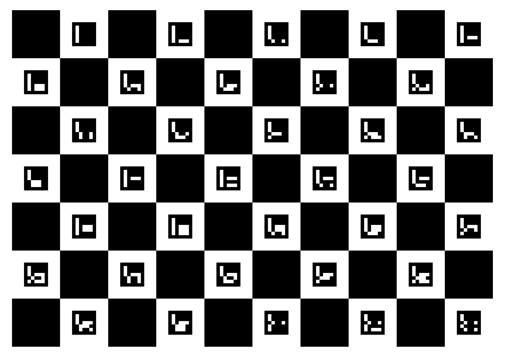

DICT_ARUCO_ORIGINAL · marker ids 0–34.--board_type=charuco --num_squares_x=10 --num_squares_y=7 --checker_square_length_m=0.040
and leave --aruco_dict at its default (ARUCO_ORIGINAL).DICT_ARUCO_ORIGINAL, columns 10, rows 7,
square 40.0 mm, marker 20.0 mm, start ID 0, marker count 35. Layout parity is auto-detected.
(Compatibility expected; verify marker detection on the first capture.)Note: the primary recommended board remains the existing 11×8 DICT_5X5_100
34/25 mm calib.io board (bigger squares, modern dictionary, no interference with DICT_4X4 gripper
markers). This ARUCO_ORIGINAL board exists for OpenICC-extractor parity work (e.g. the IMU
calibration pipeline) and is also safe alongside 4×4 gripper markers.
